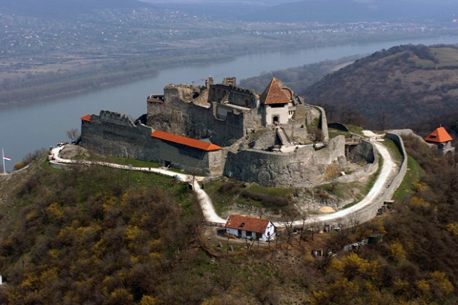
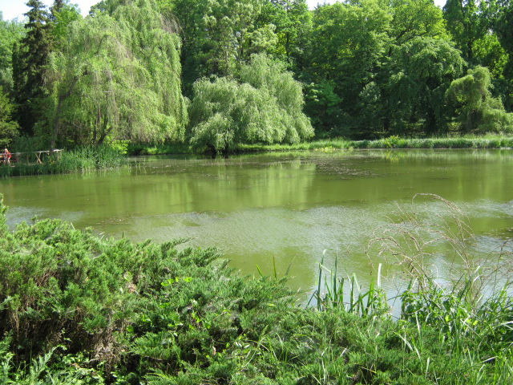
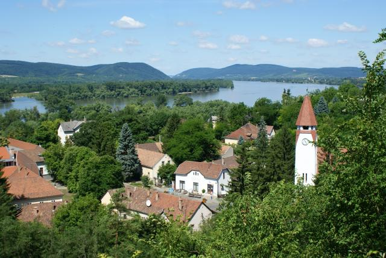

Discover the areaThe city of Vác is located 30 kilometres from Budapest in the heart of the “Dunakanyar” (Danube Bend) region on the left bank of the river. The railway station is a 15 minute walk from the house, there is a direct train every hour that reaches Budapest in half an hour. |
|
|---|---|
 |
City of VácThe history of the city goes back to the 10th century. To visit: the main square of baroque style, several baroque churches, the triumphal arch (the only one in Hungary), the "Ferenc Liszt" promenade along the Danube. |
 |
SzentendreSzentendre is a city of arts situated on the other side of the Danube. With its picturesque narrow streets, it is an ideal destination for those who want to visit museums, charming terraces and boutiques for handcrafted items. |
|  |
VisegrádAt about 20 kilometres upstream on the right bank of the Danube, Visegrád seduces its visitors with its medieval fortress with a wonderful view on the Danube Bend, the royal palace, the cafés and restaurants. |
 |
EsztergomEsztergom, located next to the border with Slovakia, has been a very important place in Hungarian history and culture. It is where Saint Stephen, our first king, was crowned in 1000 and where the Hungarian archbishop lives. Those who want to know more about the spiritual history of Hungary must visit Esztergom. The ¬famous basilica stands above the city and the Danube as a sign of spiritual power. |
 |
HollókőHollókő, classified World Heritage by UNESCO, is the most beautiful village in Hungary with its fully preserved houses. It is located 80 kilometres from Vác. |
|  |
Botanical Garden of Vácrátót13 kilometres from Vác, discover one of the most beautiful botanical garden of Hungary. |
 |
Bear park of VeresegyházAn exceptional adventure for children – the only bear park in Hungary – at 20 kilometres from Vác. |
|  |
ZebegényPicturesque village of painters on the left bank of the Danube 25 kilometres to the North of Vác. To visit: the house of the famous painter István Szőnyi, the Art Nouveau style church entirely decorated with frescoes. |
 |
HikingThe Börzsöny and Naszály mountains offer many hiking trails to those who like hiking. |
Canoe rentalCanoe rental service at Verőce (10 kilometres from Vác on the same side of the river). An ideal way to visit the Danube Bend. |
|